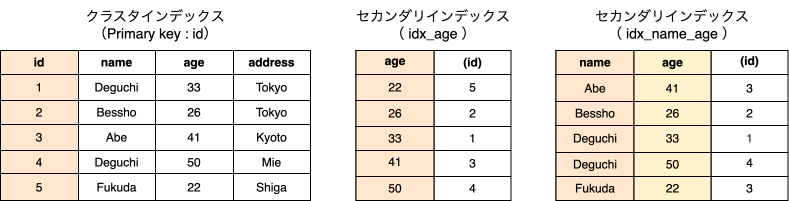

MySQL のインデックス
- イメージ図
- 実際には B+Tree というデータ構造ですが、今回はこのイメージで説明します
# 紙面の都合で擬似コードです
CREATE TABLE `member` (
`id`, `name`, `age`, `address`, # カラム
PRIMARY KEY (`id`), # プライマリキー
KEY `idx_age` (`age`) # age のみのインデックス
KEY `idx_name_age` (`name`, `age`), # name と age の複合インデックス
)
